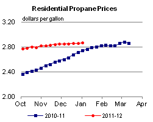

Released: February 15, 2012
Next Release: February 23, 2012
Midstream Makeover
Recent shifts in U.S. oil supply and demand patterns are testing the limits of the Nation's oil storage and transportation network. Upstream, a revolution in tight oil1 production, fostered by hydraulic fracturing and horizontal drilling techniques, has raised logistical challenges commensurate with the new sources of oil supply it has unlocked. Downstream, shifts in demand patterns and refining economics are opening a new chapter in supply logistics. Refinery closures in the Delaware Valley and the Caribbean mean that East Coast markets -- no longer as large as they once were, but still the Nation's largest - may become more reliant on product supply brought in from longer distances. On both counts, changing needs would significantly alter the web of pipelines, storage tanks and terminal facilities on which the oil industry and the Nation depend to link supply centers and end-users. But the overhaul of the midstream segment of the oil industry goes beyond expanding the infrastructure. The very nature of midstream services, their function in the Nation's supply dynamics, is being redefined.
As far as logistical assets are concerned, the mismatch between distribution needs and current infrastructure is becoming hard to miss. On the upstream front, the crude oil production boom in the Bakken calls for improved market access to that new source of supply. Depressed prices for new crude grades reflect infrastructure constraints. Inventory builds have caused stranded Bakken crude to trade at a sagging discount to benchmark West Texas Intermediate (WTI). Growth in Canadian production is also causing both heavy, sour West Canadian Select and light, sweet Canadian Syncrude to trade at deep discounts to WTI. Meanwhile, WTI's own discount to coastal and imported crude oil is again widening after announced delays in the Seaway pipeline reversal.
Downstream, East Coast and Caribbean refinery closures, if made permanent, would also require a midstream response. On paper, refining capacity in the more competitive Gulf Coast and Midwest hubs appears more than adequate to make up for lost East Coast refining capacity. But the Colonial pipeline, which connects Gulf Coast refineries to the Central Atlantic, is already running near capacity levels, so bringing incremental Gulf Coast product volumes to East Coast markets could be a challenge. And while refineries in Ohio and elsewhere in the Midwest could theoretically substitute for those in the Philadelphia area in supplying western Pennsylvania and upstate New York, here too lack of pipeline capacity is a problem. So is the limited ability of Delaware Valley terminals to receive more product imports in the short term, and the lack of connectivity between those terminals and product pipelines running west from Philadelphia.
Midstream companies are already seizing some of the opportunities provided by both the surge in crude production in the mid-continent and refinery closures on the East Coast. Longer supply lines to East Coast markets will not only require upgraded transportation logistics, but also raise demand for storage, as higher inventory levels will be needed to manage seasonal demand peaks and disruption risks. Storage operators have announced several plans to significantly expand East Coast and Caribbean tank farms. Shrinking refining capacity there seems to go hand in hand with rising terminal capacity, not least because some of the idled refineries are being converted to storage. In the Bakken, crude oil aggregators, transportation providers, and marketers are in high demand. Despite steep capital costs and often cumbersome permitting processes, they are responding with a flurry of infrastructure projects to resolve the bottlenecks.
Perhaps not coincidentally, these expansion plans occur even as the midstream services industry is itself going through a period of restructuring. Once-ancillary segments of a vertically integrated oil industry, U.S. transportation and storage companies are increasingly becoming their own masters. Starting in the late 1990s, the emergence of the U.S. "super majors" saw large oil companies combine upstream assets and turn over refining assets seen as nonessential to a new crop of independent refiners, some of which went on with their own wave of consolidation. Those independent refiners have in turn been spinning off storage and transportation assets, often as separate Master Limited Partnerships (MLPs), adding to the ranks of more established midstream companies such as Buckeye Partners, L.P., first incorporated as a Standard Oil subsidiary in 1886. An example of those new, stand-alone midstream entities is Nustar Energy L.P. (NuStar), first spun off as Shamrock Logistics L.P. by refiner Ultramar Diamond Shamrock Corporation (UDS) in 2001, and later renamed Valero L.P. after Valero Energy Corporation bought UDS. Sunoco Logistics, spun off by Sunoco in 2002 to own, buy and operate crude and product pipelines, terminals and storage facilities, and crude acquisition and marketing assets, is another example, as is Tesoro Logistics L.P., the transportation arm of Tesoro Corporation.
Unlike the shrinking East Coast refining industry, midstream services are undergoing a growth spurt, fuelled by both organic expansion and acquisitions. Logistics companies are snapping up discarded refining assets. Plains All American Pipeline, L.P. last year bought the Yorktown, VA refinery, now a 6.6 million-barrel crude, product, and LPG terminal. HOVENSA said it would convert its St. Croix, USVI refinery into an oil storage terminal. Much of Sunoco's East Coast logistical assets were handed over to Sunoco Logistics, making the sale of the refineries with which they had once been associated all the more problematic.
Even as they are breaking loose from once vertically integrated oil companies, midstream companies are consolidating horizontally, expanding their geographic reach and enhancing their assets' internal "connectivity." Both NuStar and Buckeye have acquired major Caribbean tank farms. The latter bought Bahamas Oil Refining Company International (BORCO), an over 21 million-barrel crude, fuel oil, and light product terminal in 2011. Buckeye plans to boost BORCO's capacity by about a third, with room for further capacity expansion if needed. The former bought a 13 million barrel terminal in St. Eustatius, Netherlands (in the former Netherlands Antilles), in 2005, which it plans to expand by almost 12 million barrels. NuStar's other international assets include tank farms in Canada, Mexico, the United Kingdom and Turkey.
Buckeye last week said it would also buy a four million-barrel marine terminal from Chevron at Perth Amboy, NJ in the New York Harbor area, which would effectively let it connect its nearby Linden, NJ, tank farm with BORCO and, after completion of a new pipeline link between Perth Amboy and Linden, move waterborne light products, such as gasoline or diesel, onto its existing pipeline network running from Linden to Pennsylvania and upstate New York, which it also plans to expand.
This mix of market changes and corporate restructuring is redefining the role of midstream services in the global supply architecture. Each midstream MLP's strategy is different, but many seem to follow a multi-pronged business model. This business model comprises a throughput-based transportation segment (the collection of pipeline fees based on transported volumes), a capacity-based storage or "facility" segment (where customers pay for storage capacity whether or not they fully utilize it), and sometimes a third business line, which is somewhat akin to arbitrage. The contribution to earnings from this third business line varies substantially by company and reporting period.
Whereas midstream companies had often been limited to a supporting role in the oil industry, large emerging midstream independents with a global footprint could increasingly pursue strategies of their own and may become more active, direct participants in the physical and paper markets. It is too early to say how the restructuring of the logistics segment of the oil industry from integrated cost centers to independent profit centers will affect product markets. But it is probably safe to expect significant changes in supply dynamics and even, potentially, product pricing from the fast growth of this newly independent sector.
Gasoline and diesel retail prices up for a third straight week
The U.S. average retail price of regular gasoline increased just over 4 cents to $3.52 per gallon. The average price is about $0.38 per gallon higher than last year at this time. Prices were up across all regions except the Midwest, where the price declined less than a penny to remain at $3.41 per gallon. The Rocky Mountain price increased less a cent to remain the lowest in the Nation at $3.07 per gallon. The largest increase occurred on the Gulf Coast where the average rose over 8 cents to $3.43 per gallon. East Coast and West Coast prices are about 6 cents higher at $3.61 per gallon and $3.73 per gallon, respectively.
The national average diesel price increased almost 9 cents to $3.94 per gallon. The diesel price is $0.41 per gallon higher than last year at this time. The largest increase was in the Midwest where the price was up about 11 cents to $3.86 per gallon. The Gulf Coast and West Coast averages both rose eight and a half cents to $3.86 per gallon and $4.12 per gallon, respectively. The East Coast increased 8 cents to $4.03 per gallon and moved above the $4 mark for the first time since May 2011. The smallest increase (2 cents) took place in the Rocky Mountains where the price was $3.84 per gallon, the least expensive in the Nation.
U.S. average residential and wholesale heating oil prices increase
The U.S. residential heating oil price increased by $0.06 per gallon during the week ending February 13, 2012 to $4.03 per gallon. This price is nearly $0.45 per gallon higher than the same time last year. The wholesale heating oil price increased by $0.05 per gallon over the same period to $3.26 per gallon, $0.43 per gallon higher than last year at this time.
The average residential propane price increased by less than $0.01 per gallon during the week ending February 13 to $2.86 per gallon, $0.04 per gallon higher than last year. The average wholesale propane price decreased by $0.04 per gallon to $1.16 per gallon. This was a decrease of exactly $0.24 per gallon when compared with the February 14, 2011 price of $1.40 per gallon.
Propane inventories decrease slightly
Propane inventories in the United States declined by only 0.2 million barrels last week to 46.4 million barrels, as much of the contiguous United States continued to experience warmer-than-average winter temperatures. Midwest regional stocks fell 0.6 million barrels and the Rocky Mountain/West Coast region drew 0.1 million barrels. Elsewhere, the Gulf Coast region added 0.4 million barrels and the East Coast regional stocks were up slightly. Propylene non-fuel use inventories represented 10.6 percent of total propane inventories.
1 Tight oil refers to oil produced from shale or other very low-permeability rocks with horizontal drilling and multi-stage hydraulic fracturing technologies.
Text from the previous editions of This Week In Petroleum is accessible through a link at the top right-hand corner of this page.
|  | |||||||
| Retail Data | Changes From | Retail Data | Changes From | ||||
| 02/13/12 | Week | Year | 02/13/12 | Week | Year | ||
| Gasoline | 3.523 | Heating Oil | 4.032 | ||||
| Diesel Fuel | 3.943 | Propane | 2.860 | ||||
|
|||||||||||||||||||||||||||
| *Note: Crude Oil Price in Dollars per Barrel. | |||||||||||||||||||||||||||
 |
|||||||
| Stocks Data | Changes From | Stocks Data | Changes From | ||||
| 02/10/12 | Week | Year | 02/10/12 | Week | Year | ||
| Crude Oil | 339.1 | Distillate | 143.7 | ||||
| Gasoline | 232.2 | Propane | 46.439 | ||||